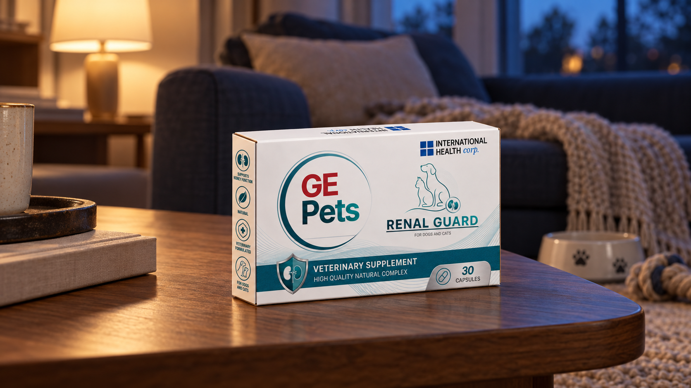

NEGA BUBREGA

GE PETS
Renal Guard
Nutritivna podrška funkciji bubrega, kao deo pažljive brige o vašem ljubimcu.
Upoznajte Renal Guard
Proizvod iz GE Pets linije posvećen podršci bubrezima.
Za izbor proizvoda i način primene oslonite se na deklaraciju pakovanja i savet veterinara koji poznaje vašeg ljubimca.